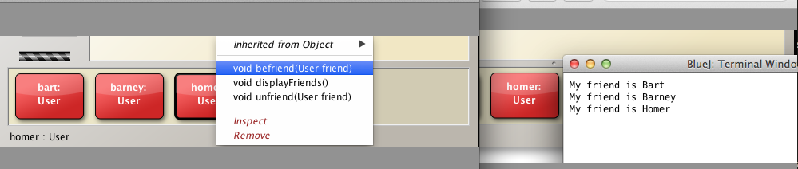

Objectives
Spacebook Application (Part 2)
In the second lab we continue to develop Spacebook. A new class, Message, is introduced to facilitate communication between users. A Message object contains the message as well as references to both the originator and target of the communication. We gain further experience in using collection classes such as ArrayList. Both manual and unit testing is employed, advantage being taken of our previous experience with the JUnit testing framework. The lab concludes with a short exercise set.
Spacebook_v2
We shall now progress to the next iteration of the spacebook application.
Open project spacebook_v1 and save as spacebook_v2.
The objective of this iteration is to facilitate multiple friendships.
We shall use an ArrayList, which has been discussed in a previous lecture, to store Friendship instances (objects).
We will refactor the final code from spacebook_v1 that is now present in spacebook_v2.
Open User in the BlueJ editor and replace the friendships field.
Replace this code:
Friendship friendships;with this:
private ArrayList<Friendship> friendships = new ArrayList<>();We added the private access modifier above because we do not anticipate a need to directly access this array during testing. We, therefore, adhere to the philosophy of enforcing the maximum access restriction on instance variables and methods that is practical (that is, in this instance, private).
Add an import statement at the top of the User file:
import java.util.ArrayList;Now refactor befriend method.
Replace the line of code:
friendships = new Friendship(this, friend);with these lines:
Friendship friendship = new Friendship(this, friend);
friendships.add(friendship);What we have done here is as follows:
- Instantiated a Friendship object exactly as in spacebook_v1
- Created a local reference to the Friendship object (friendship)
- Added this reference to the instance variable ArrayList friendships using the ArrayList add method
The next method to refactor is unfriend.
Replace the line of method here:
public void unfriend()
{
friendships = null;
}with this refactored version:
public void unfriend(User friend)
{
for(Friendship friendship : friendships)
{
if(friendship.targetUser == friend)
{
friendships.remove(friendship);
return;
}
}
}What we have done here is as follows:
- Used a for-each (enhanced for) loop to traverse the ArrayList of friendships
- Checked each element encountered to determine if it matches the actual parameter friend.
- If a match found:
- removed it from the list using the ArrayList method remove
- exited the method immediately using a return statement
- If no match found then
- no action taken.
- If a match found:
Finally we refactor the method displayFriends, replacing the existing code:
if(friendships != null)
{
System.out.println("My friend is " + friendship.targetUser.firstName);
}
else
{
System.out.println("Unfortunately you have no friends");
}with the following:
if(friendships.isEmpty())
{
System.out.println("Unfortunately you have no friends");
}
for(Friendship friendship : friendships)
{
System.out.println("My friend is " + friendship.targetUser.firstName);
}In this refactoring we
- First checked if any friendship object references stored in the ArrayList.
- If not then we printed a message indicating no friendships present.
- Otherwise traversed the array and printed the list of friends.
Spacebook_v2: Refactored
Here is the complete refactored code for User and Friendship:
import java.util.ArrayList;
public class User
{
String firstName;
String lastName;
String email;
String password;
private ArrayList<Friendship> friendships = new ArrayList<>();
public User(String firstName, String lastName, String email, String password)
{
this.firstName = firstName;
this.lastName = lastName;
this.email = email;
this.password = password;
}
public void befriend(User friend)
{
Friendship friendship = new Friendship(this, friend);
friendships.add(friendship);
}
public void unfriend(User friend)
{
for(Friendship friendship : friendships)
{
if(friendship.targetUser == friend)
{
friendships.remove(friendship);
return;
}
}
}
public void displayFriends()
{
if(friendships.isEmpty())
{
System.out.println("Unfortunately you have no friends");
}
for(Friendship friendship : friendships)
{
System.out.println("My friend is " + friendship.targetUser.firstName);
}
}
}public class Friendship
{
User sourceUser;
User targetUser;
public Friendship(User sourceUser, User targetUser)
{
this.sourceUser = sourceUser;
this.targetUser = targetUser;
}
}Spacebook_v2: Manual Testing
Because of the refactoring the UserTest class will no longer compile. Remove the class by placing the cursor over the UserTest class diagram, right-clicking and selecting Remove from the context menu that appears.
Perform some more tests:
Test 1
Create three User instances on the object bench as shown in Figure 1:
- User Homer
- Name: Homer Simpson
- User barney
- Name: Barney Gumble
- User bart
- Name: Bart Simpson

Select homer instance on object bench, right click and invoke displayFriends.
You should see, as in Figure 2, that there are no friends because Homer has not created any friendships.

Remedy this by selecting homer object, right clicking and invoking befriend (Figure 3). - - Enter the name of the other User instance on the object bench, namely, barney. - Repeat, adding Bart as a second friend to Homer.
Select Homer again and invoke displayFriends.
- As illustrated in Figure 4, the friends Homer has just created should be displayed.
Test 2
- Check that neither Barney nor Bart have any friends.
- Then add Bart as friend to Barney and
- Barney as friend to Bart
- Check the outcome by displaying first Bart's friends and then Barney's.
- See Figure 5 for the outcome.

Test 3
- Add Homer as a friend to Homer.
- Invoke displayFriends on homer and see Figure 6 for outcome.
- 
- This may not be what the final Spacebook design should permit, that is, a user being able to befriend itself.
Test 4
- Remove both Bart and Barney as Homer's friends:
- Use unfriend method
- Invoke displayFriends to check only Homer remains as a friend to himself.
Test 5
- Attempt to add Homer a second time as a friend to Homer:
- Invoke befriend(homer)
- Invoke displayFriernds on homer and see Figure 8 for outcome.

spacebook_v3 : Message class
In this iteration we shall create and integrate a class to manage messages.
Open project spacebook_v2 and save as spacebook_v3.
Create a new class, Message.
Consider the fields that are required:
- Message
- The message sender
- The message recipient
Both the sender and recipient will have type User.
We use a String object to store the message text.
- String messageText
Here is the outline of the Message class.
Replace the default auto-generated code with this and compile:
public class Message
{
String messageText;
User from;
User to;
}Next we add an overloaded constructor:
public Message(User from, User to, String messageText)
{
this.from = from;
this.to = to;
this.messageText = messageText;
}Finally, for the purpose of testing, we shall add a print method:
public void displayMessage()
{
String nameFrom = from.firstName;
String nameTo = to.firstName;
System.out.println(nameFrom + " says \""+messageText + "\" to " + nameTo);
}Observe the argument we are providing to println:
nameFrom + " says \""+messageText + "\" to " + nameToUsing the backslash (\) in this situation is known as 'escaping': whatever character is typed immediately following the escape sequence is printed exactly as is.
The effect here is to enclose the message text in double quotes.
We have now written a basic Message class and shall proceed to use it within User.
Here is the completed code:
public class Message
{
String messageText;
User from;
User to;
public Message(User from, User to, String messageText)
{
this.from = from;
this.to = to;
this.messageText = messageText;
}
public void displayMessage()
{
String nameFrom = from.firstName;
String nameTo = to.firstName;
System.out.println(nameFrom + " says \""+messageText + "\" to " + nameTo);
}
}spacebook_v3 : Integrate Message
We will create both an inbox and an outbox in which to store messages.
Progressively add each code snippet below, compiling the code after each addition as a means of checking for syntax errors.
A suitable container is an ArrayList with which we are already familiar.
Add these lines to the User class immediately following the friendships field: thes statements declare and instantiate the inbox and outbox.
private ArrayList<Message> inbox = new ArrayList<>();
private ArrayList<Message> outbox = new ArrayList<>();Next we shall write a method to send a message to a specific user. Here's the code:
public void sendMessage(User to, String messageText)
{
Message message = new Message(this, to, messageText);
outbox.add(message);
to.inbox.add(message);
}In sendMessage
A new Message instance is created with arguments - this: a reference to the User instance generating the message - to: a reference to the User instance, the recipient of the message - messageText: the text of the message
Study the statement to.inbox.add(message):
- to is a reference to the User to whom the message is being sent.
- to.inbox directly accesses the target user's inbox.
- to.inbox.add invokes the ArrayList method add.
- to.inbox.add(message) adds the message to the target user's inbox. See Figure 1.
For testing purposes we shall write methods to display the entire contents of both the inbox and outbox.
public void displayOutbox()
{
for(Message msg : outbox)
{
System.out.print("Message in "+firstName+"'s outbox: ");
msg.displayMessage();
}
}Observe what's happening here:
- we use a for-each to traverse the outbox
- for each Message type element in the list
- the Message displayMessage method is invoked
Here is a similar method to display the contents of the inbox:
public void displayInbox()
{
for(Message msg : inbox)
{
System.out.print("Message in "+firstName+"'s inbox: ");
msg.displayMessage();
}
}Here is the completed code:
import java.util.ArrayList;
public class User
{
String firstName;
String lastName;
String email;
String password;
String statusMessage;
private ArrayList<Friendship> friendships = new ArrayList<>();
private ArrayList<Message> inbox = new ArrayList<>();
private ArrayList<Message> outbox = new ArrayList<>();
public User(String firstName, String lastName, String email, String password)
{
this.firstName = firstName;
this.lastName = lastName;
this.email = email;
this.password = password;
}
public void sendMessage(User to, String messageText)
{
Message message = new Message(this, to, messageText);
outbox.add(message);
to.inbox.add(message);
}
public void displayOutbox()
{
for(Message msg : outbox)
{
msg.displayMessage();
}
}
public void displayInbox()
{
for(Message msg : inbox)
{
msg.displayMessage();
}
}
public void befriend(User friend)
{
Friendship friendship = new Friendship(this, friend);
friendships.add(friendship);
}
public void unfriend(User friend)
{
for(Friendship friendship : friendships)
{
if(friendship.targetUser == friend)
{
friendships.remove(friendship);
return;
}
}
}
public void displayFriends()
{
if(friendships.isEmpty())
{
System.out.println("Unfortunately you have no friends");
}
for(Friendship friendship : friendships)
{
System.out.println("My friend is " + friendship.targetUser.firstName);
}
}
}Manual Test
In this simple test we shall:
- Create two User objects
- Compose and send a message from one User to the other.
- Check the outbox of the sender
- Check the inbox of the receiver
Create two User objects on the object bench, one representing Homer, the other Barney. See Figure 2.
 Invoke the sendMessage on the User homer object, selecting the User barney as the target (Figure 3):
Invoke the sendMessage on the User homer object, selecting the User barney as the target (Figure 3):
 Invoke displayOutbox on User homer to check the message is present (Figure 4):
Invoke displayOutbox on User homer to check the message is present (Figure 4):
 Check the message has been received by Barney by invoking displayInbox on object User barney (Figure 5).
Check the message has been received by Barney by invoking displayInbox on object User barney (Figure 5).

spacebook_v3 : BlueJ JUnit Testing
Create a UserTest class by selecting User, right clicking and invoking Create Test Class.
Open UserTest in the BlueJ editor and replace the auto-generated code with the following fixture:
import static org.junit.Assert.*;
import org.junit.After;
import org.junit.Before;
import org.junit.Test;
public class UserTest
{
private User homer;
private User barney;
private User bart;
@Before
public void setUp()
{
homer = new User("Homer", "Simpson", "homer@simpson.com", "secret");
barney = new User("Barney", "Gumble", "barney@gumble.com", "secret");
bart = new User("Bart", "Simpson", "bart@simpson.com", "secret");
}
}This is code has been copied from an earlier JUnit test that we conducted.
We could have generated this code using the UserTest methods (Figure 2) and the BlueJ graphical user interface but have chosen instead to shortcut the process.
Select UserTest and invoke Test Fixture to Object Bench.
This creates three User objects on the object bench using the fixtures in UserTest.java (Figure 3).

Right click on UserTest and create a test method testMessages (Figure 4).
Select User homer and invoke sendMessage to send a message to bart.
Add the name
- bart to the User to input box and
- a message of your choice to the messageText input box
See (Figure 5).
Using a similar approach send further messages:
- Barney sends a message to Homer
- Bart sends a message to Homer
- Bart sends a message to Barney
End the recording by pressing the End button on the BlueJ IDE window (Figure 6).
Recall that the UserTest class was developed in step 03 in the first part of this session.
- Within the class we created a skeleton of the method testMessages (see Figure 7).

Open the UserTest code in the BlueJ editor and add the following lines to the testMessages method.
homer.displayOutbox();
homer.displayInbox();
bart.displayOutbox();
bart.displayInbox();
barney.displayOutbox();
barney.displayInbox();Finally, invoke TestAll on UserTest and observe results along the lines illustrated in Figure 8.
This is not a rigorous test. We shall use the exercises section to suggest some improvements.
Exercises
Exercise 1
- Create 5 User objects on the object bench:
- Select name, email address and password of your choice for each.
- Or choose the names as shown in Figure 1.
- Tablulate on paper the friendship relationships depicted in Figure 1.
- The partially completed table is shown in Table 1.
- Use the object bench to represent the friendship relationships.
- For example since bart is a friend of marge:
- select marge on the object bench and invoke befriend(bart).
- continue until all the friendship relationships as shown in Figure 1 are established.
- For example since bart is a friend of marge:
- Verify correct implementation of the friendship network using existing User class method(s)
- Select name, email address and password of your choice for each.
Exercise 2
Recall that it is possible for a user to befriend itself. For example, you could
- create a User object bart and
- invoke befriend on bart
- using bart as a parameter
- invoking displayFriends on bart will demonstrate he has succeeded in befriending himself (see Figure 2).
- This Exercise requires you to modify the method befriend in User to disallow a user befriending oneself.
- Test the refactored method works as intended by invoking it
- Using the invoking object as the argument, that is, attempting to befriend oneself
- Using an object other than the invoking object to establish a friendship.
- Test the refactored method works as intended by invoking it
Exercise 3
Presently a user can remove a specific friend from its list of friendships by invoking unfriend.
- Write a method that would allow a user to remove all friends.
- Use the signature: public void unfriendAll()
Exercise 4
- Introduce additional fields in User as follows:
int age;
String nationality;- Modify the overloaded constructor to includes parameters representing these fields.
- Apply this signature:
- public User(String firstName, String lastName, int age, String nationality, String email, String password)
- Apply this signature:
- Initialize the new fields within the constructor.
Exercise 5
- Introduce a method to broadcast a message from a particular user to all its friends.
- The signature of the method is:
- public void broadcastMessage(String messageText)
- Test the method as follows:
- Use the UserTest as previously (or other methods) to populate the object bench with 5 User objects.
- The network of friendships established in Exercise 1 should be present.
- Marge has befriended Bart, Barney and Homer:
- Marge broadcasts a message
- Check Marge's outbox
- Check the inbox of the intended recipients.
- The signature of the method is: